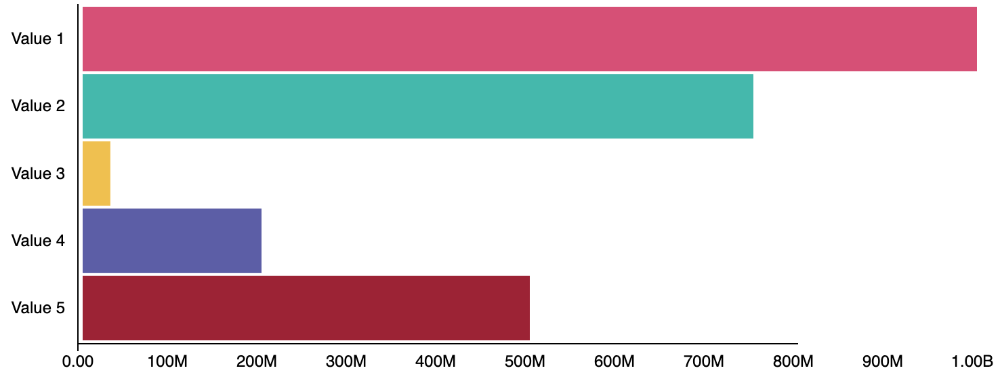

As with most graphs—Chart JS, NVD3, D3, or even High Charts I believe,
we begin with either a canvas tag or an svg element. That's exactly what's
happening here. The svg element is then wrapped in D3's selector. Upon which,
a whole host of methods make themselves available.

After retrieving the element with the select method, we can draw shapes with
append(). Notice .append used multiple times in this d3 bar chart. Append then
modifies the element by chaining methods. Similiar to jQuery. What's more, is
we manipulate the DOM similar to many other libraries. Here however, animation
occurs between values.
Harnessing D3's real power however comes in when we introduce data. Done so
either by an array or an external file. D3 will draw a shape for every point
in the data set. Similar to RxJSs' observables' three methods of next, error,
and complete, D3 has enter, update, and exit. Enter occurs on shape
initialization. The update method occurs when there's changes to the data set,
giving devs the ability to react to changes. To no surprise, D3 also provides
methods to listen for events, such as mouseover on tool tips for instance.
I think I seriously found D3 more confusing (initially) than Angular. I was
new to data visualization libraries and techniques. Where we work and what we
build no doubt defines us as developers. Developing data driven visualizations
has no doubt made me a far better UI developer. After the uphill battle, I
found the lib to be powerful, maleable, and quite unique. Regardless of where
you're at in your career, take some time and build a D3 bar chart.